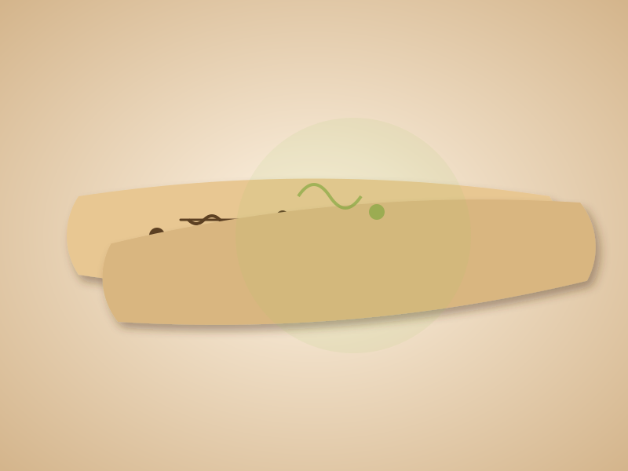

The Discovery of Invisible Entities
The Atharvaveda represents a monumental turning point in human understanding of disease. Unlike earlier texts which heavily focused on spiritual philosophy, the Atharvaveda includes the Bhaishajyasuktas (hymns dealing with healing), which detail the presence of completely invisible entities causing severe human ailments.
Vedic scholars coined the terms Krimi (insects/worms) and Rakshasa (destructive forces) to describe these microscopic agents. Long before the invention of the lens microscope, they mathematically and conceptually divided these Krimis into categories based on where they lived: in blood (Raktaja), in feces (Purishaja), and in phlegm (Kaphaja).

Surya Rashmi Chikitsa (Sunlight Therapy)
One of the most profound insights documented in the Atharvaveda is the explicit use of the sun's rays to destroy unseen pathogens—a practice known as Surya Rashmi Chikitsa. The text clearly states that the rising sun neutralizes the "poison" of invisible Krimis.
This is effectively the ancient precursor to modern UV sterilization. By exposing clothing, drinking water, and wounds strictly to sunlight, ancient physicians were empirically utilizing ultraviolet radiation to perform cellular disruption of bacterial DNA.